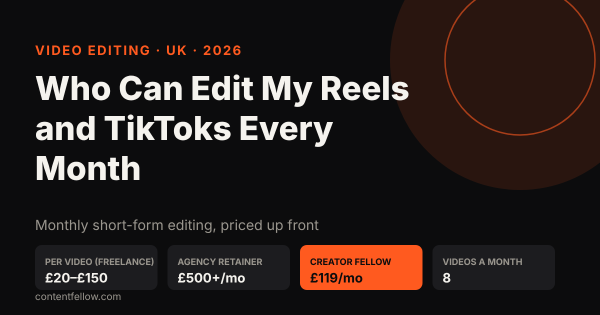
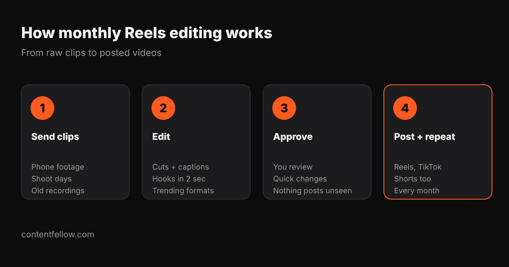

Who Can Edit My Reels and TikToks Every Month? UK Prices and Options (2026)
Who can edit my Reels and TikToks every month?
Quick answer: A freelance video editor, a social media agency or a monthly editing subscription can edit your Reels and TikToks every month in the UK. Freelancers usually charge £20–£150 per short video, agencies £500 or more a month, and ContentFellow's Creator Fellow edits 8 short videos, 1 motion graphics video and 1 podcast (up to 60 minutes) for £119 a month. (Updated October 2026.)

TL;DR: If you post more than a few times a month, a fixed monthly plan beats paying per video. You send raw clips, the editor returns captioned, hook-first vertical videos, you approve them, and they go out on Instagram, TikTok and YouTube Shorts.
Your three options in the UK
| Option | Typical UK price | Good for | Watch out for |
|---|---|---|---|
| Freelancer (Fiverr, Upwork, local) | £20–£150 per video | One-off batches | Turnaround and quality vary; you manage briefs |
| Social media agency | £500–£2,000+ a month | Editing plus posting and strategy | Long contracts, VAT on top |
| Editing subscription (Creator Fellow) | £119 a month | 8 videos a month, steady output | Set number of videos each month |
So how much should you pay someone to edit TikToks? For a simple captioned 15–60 second video, £20–£50 is the usual freelance range; with motion graphics, B-roll and sound design it is closer to £80–£150. On a monthly plan, 8 videos for £119 works out at under £15 a video, with a motion graphics video and a podcast edit included.
What a good monthly editor does

- Hooks in the first 2 seconds. Most viewers decide almost instantly whether to keep watching.
- Burned-in captions. Many people watch with the sound off.
- Platform formats. 9:16 vertical, safe zones for buttons, the right length for each platform.
- A consistent look. Your fonts, colours and logo, so every video is recognisably yours.
- A calendar. A steady number each week rather than a burst then silence.
Where do the clips come from?
Phone footage is fine for most small businesses. If you want better raw material, our Studio Fellow (£149 a month) films an on-site shoot of up to 3 hours in 4K, which gives the editor a month of clips. To have them posted for you too, add the Social Fellow: Manage + Post (£129 a month). The Growth Fellow (£389 a month) bundles all five Fellows.
What to ask before you hire an editor
- How many videos a month, how long, and how many rounds of changes?
- What turnaround do you promise?
- Do I own the edited files?
- Is VAT extra? (ContentFellow is not VAT registered, so its prices are the full amount.)
- Is there a minimum contract? (Ours is monthly.)
For the wider picture, see video editing costs in the UK and our video editing subscription comparison.
Frequently asked questions
Who can edit my Reels and TikToks every month?
A freelance editor, a social media agency or an editing subscription. ContentFellow's Creator Fellow edits 8 short videos a month plus a motion graphics video and a podcast for £119.
How much should I pay someone to edit TikToks?
Typically £20 to £50 per simple captioned TikTok from a UK freelancer, and £80 to £150 for heavier edits. Monthly plans bring the cost per video down.
Can I try it before paying?
Yes. The Creator Fellow starts with 3 free videos, no card needed.
Do you post the videos as well?
Editing is the Creator Fellow. Posting is the Social Fellow: Manage + Post at £129 a month, or get both in the Growth Fellow.
Is there a long contract?
No. Plans are monthly and you can change or cancel from the next month.
See all services and prices → · More quick answers on our answers page. Want a site you own? See development packages and website care plans.
Sources: ContentFellow plans and prices from contentfellow.com/pricing/ (October 2026); UK market ranges are typical quotes from UK freelancer marketplaces and agency price pages checked October 2026. Last updated 19 October 2026.